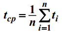

На платформы установите по одинаковому набору перегрузков m1 = m2 = 0,01 кг. Проверьте равновесие системы
Часть перегрузков с левой платформы переложите на правую платформу (см. таблицу 1). Рассчитайте силу
Fg =(m2–m1)g, приводящую систему в движение.
Измерьте время t движения правого груза от нулевой отметки шкалы до пола (расстояние h). Проведите измерения
не менее 3-5 раз. Вычислите среднее время движения грузов по формуле 
Используя значение tср, рассчитайте ускорение движения грузов по формуле
Повторите пункты 2-4 для пяти различных значений (m2–m1). Результаты измерений и вычислений запишите в
таблицу 1
Постройте график зависимости ускорения от силы a=f1(Fg) (правила построения графиков приведены в
теоретическом введении методических указаний пособия).
Воспользовавшись графиком, по котангенсу угла наклона прямой определите полную массу (mпост+mбл) системы.
Используя известное значение mпост, найдите эффективную массу mбл блока, необходимую для выполнения задания 2.
По графику определите силу трения покоя установки.
Установите на правую платформу перегрузок, создающий движущую силу Fg=0,15 Н. Затем 3-5 раз измерьте время
движения груза с высоты h. Рассчитайте среднее время движения.
Повторите пункт 8 для четырех значений массы mпост грузов, не изменяя величину движущей силы. Результаты
измерений и расчетов внесите в таблицу 2.
Постройте график зависимости ускорения от величины, обратной общей движущейся массе
. При этом необходимо учитывать массу блока mбл, найденную в предыдущей серии опытов
По тангенсу угла наклона прямой определите экспериментальное значение движущей силы и сравните его с теоретическим значением. Сделайте соответствующие выводы.
Познакомьтесь с методами оценок погрешностей прямых и косвенных измерений.
По данным приборов определите систематические погрешности Δtсист и Δhcист.
Случайную погрешность Δhсл примите равной нулю, поскольку высота, с которой опускается груз каждый раз,
задается одинаковым образом.
Для каждой серии экспериментов определите по формуле стандартные
доверительные интервалы времени движения грузов
Найдите коэффициенты Стьюдента tn,a при доверительной вероятности a=0,95 и соответствующего числа n
параллельных измерений по таблице (1) введения
Определите случайные погрешности Δtсл измерений времени по формуле
Δtсл = tn,a * δ и занесите результаты в таблицы 1 и 2.
Рассчитайте полные абсолютные погрешности Δt результатов измерения по формуле
Δt = Δtсл * Δtсист. Результаты вычислений занесите в таблицы 1 и 2.
Рассчитайте величины относительных погрешностей εa измерения ускорения движения грузов по формуле
Вычислите абсолютные погрешности Δа ускорения по формуле
Δa = aср * εa, где εa – относительная погрешность, представленная в долях целого числа.
Для каждой серии экспериментов проведите округление результатов вычислений и занесите их в таблицы 1 и 2 соответственно
Промежуточные вычисления и анализ результатов работы могут быть выполнены на дополнительных листах
формата А4 и представлены для контроля при защите лабораторной работы. Полученные значения измеряемых
физических величин с указанием единиц измерения, абсолютной и относительной погрешностей, надежности (см.
Введение) запишите в выводах к работе.
Для студентов, стремящихся продемонстрировать повышенный уровень своих знаний, рекомендуется выполнять
вычисления и построение графиков с использованием программы Microsoft Office Excel или других программ для
работы с электронными таблицами. В этом случае обязательно наличие распечатки результатов.